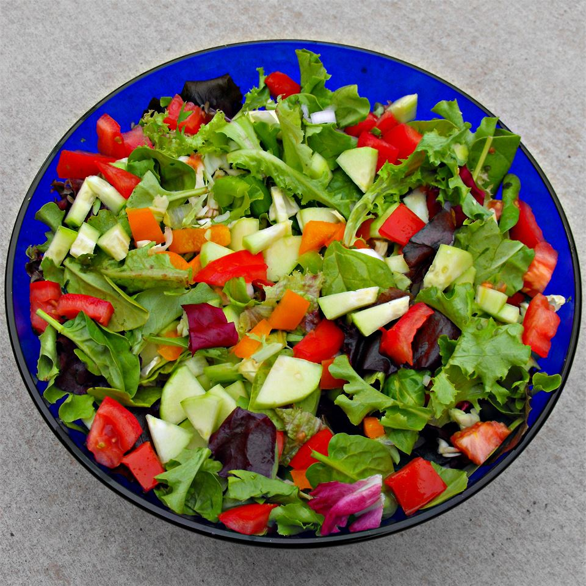

Green Salad

Description
This salad is good for a side dish or a meal on its own. I make it often for my family and they always enjoy it.
Ingredients
- 0.5 cup chopped onion
- 0.5 cup chopped green bell pepper
- 2 (10 ounce) packages mixed salad greens
- 4 thinly sliced chicken deli meat, chopped
- 1 tomato, chopped
- 3 dashes garlic powder
Steps
- Microwave or saute onion and bell pepper until soft; set aside to cool.
- In a large salad bowl, combine the onion, pepper, salad greens, deli meat and tomato. Sprinkle with the onion powder, garlic powder, black pepper and salt. Toss to mix.
- Pour on enough salad dressing or vinegar to coat, toss again and serve.